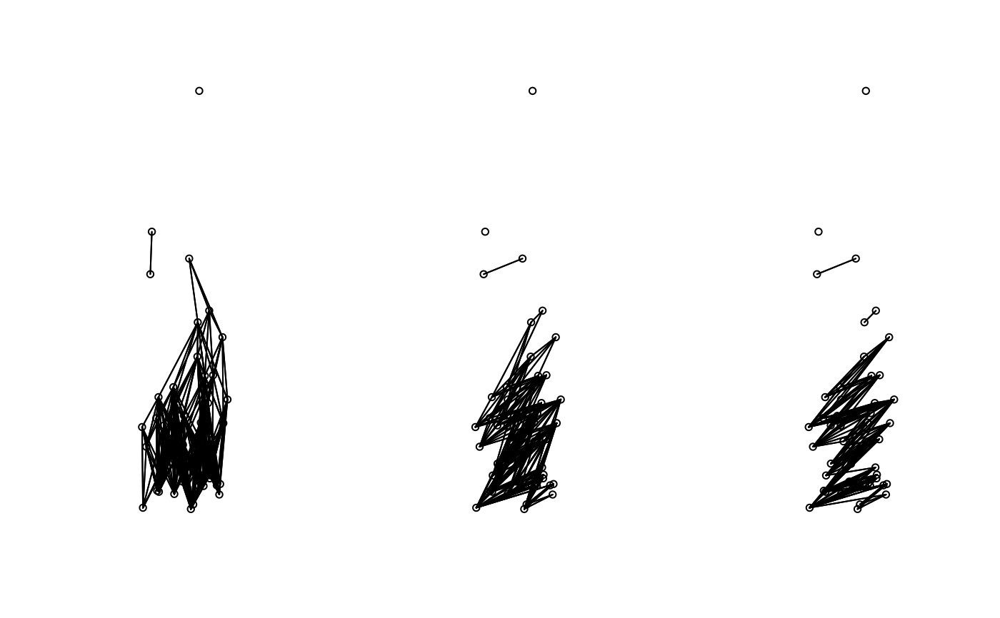

Function to construct edges based on a tolerance angle and a maximum distance
tolerance.nb.RdThis function creates an object of class nb (defined in the library spdep) containing a connexion diagram. The edges between sites are based on a tolerance angle and a maximum distance. The angle is directional; its direction is always from the bottow to the top of the screen.
Usage
tolerance.nb(coords, unit.angle = "degrees", max.dist, tolerance, rot.angle,
plot.sites=FALSE)Arguments
- coords
A matrix or a data frame containing the X and Y coordinates of the study sites.
- unit.angle
Character. The measurement units in which angles are defined: either "degrees" (default) or "radians".
- max.dist
Numeric. The maximum distance of an edge linking two sites together.
- tolerance
Numeric. The tolerance angle in which a site can influence another site. The angle is measured vertically and from bottom to top of the pictures after rotation of the points.
- rot.angle
Numeric, optional. An angle at which a set of coordinates should be rotated before creating the connexion diagram. The set of coordinates is rotated counterclockwise. Negative values will produce a clockwise rotation.
- plot.sites
Logical (
TRUE,FALSE) determining if the site should be plotted in a graphic window. This graph allows one to make sure the points are rotated in a correct direction.
Details
Even though this function creates a connexion diagram based on a tolerance angle going from the bottom to the top of the screen, the resulting object is symmetric, meaning that a site influences another and vice versa. The final object does not represent a directional connexion network.
Value
The function returns an object of class nb with a list of integer vectors corresponding to neighbour region numbers.
Warning
This function was not design to handle a large number of rows in coords.
To use this function for a set of coordinates with more than 1500 entries is memory intensive.
See also
dnearneigh, cell2nb, graphneigh, tri2nb, knn2nb
Examples
set.seed(1)
ex.data<-cbind(runif(50),rexp(50))
### Construct object of class nb with a tolerance angle of 30 degrees
### and a maximum distance of 2 m.
nb.ex<-tolerance.nb(ex.data, unit.angle = "degrees", max.dist=1,
tolerance = 30)
#> Warning: neighbour object has 3 sub-graphs
### Construct object of class nb with a tolerance angle of 30 degrees
### and a maximum distance of 2 m. The coordinates are rotated at an angle
### of 45 degrees counterclockwise.
nb.ex2<-tolerance.nb(ex.data, unit.angle = "degrees", max.dist=1,
tolerance = 30, rot.angle = 45)
#> Warning: neighbour object has 4 sub-graphs
### Construct object of class nb with a tolerance angle of pi/8 radians
### and a maximum distance of 1.5 m. The coordinates are rotated at
### an angle of pi/4 radians clockwise.
nb.ex3<-tolerance.nb(ex.data, unit.angle = "radians", max.dist=1.5,
tolerance = pi/8, rot.angle = -pi*2/3)
#> Warning: neighbour object has 5 sub-graphs
par(mfrow=c(1,3))
plot(nb.ex,ex.data,asp=1)
plot(nb.ex2,ex.data,asp=1)
plot(nb.ex3,ex.data,asp=1)
